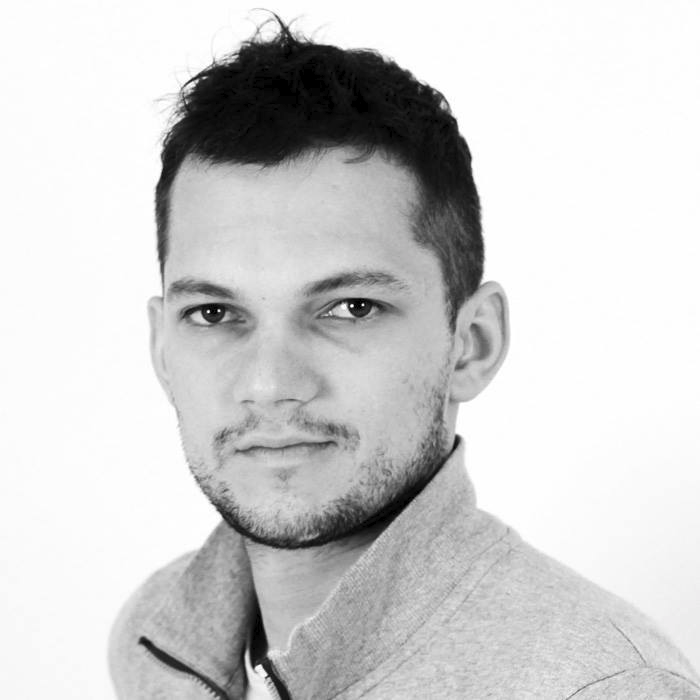

Eugene Trotsan
Director y líder técnico
Eugene Trotsan es director y líder técnico de Anthill HK. Inició su carrera profesional en Hong Kong en 2010 y, desde entonces, ha liderado proyectos de TI en su Ucrania natal, en Europa y de nuevo en Hong Kong, con entregas para clientes de banca, logística, administración pública y energías renovables.
Construye aplicaciones eficientes y fiables, diseña arquitecturas de red y servidores y coordina la integración de sistemas y la infraestructura, desde el diseño inicial hasta entornos productivos estables.
Habla con fluidez inglés, español, ruso y ucraniano—cuatro lenguas humanas, además de los lenguajes de programación que acompañan cada proyecto. Le motivan los equipos multiculturales y las iniciativas que atraviesan continentes y husos horarios.
Especialidades
- Servidores y redes — arquitectura, endurecimiento y operación de cargas críticas.
- Logística — plataformas e integraciones para cadenas de suministro y movimiento de mercancías complejas.
- Interfaces de usuario — superficies de producto claras que alinean operadores y clientes con el sistema.
- Cuatro idiomas hablados — inglés, español, ruso y ucraniano (sin contar lenguajes de programación).
Los stacks varían según el proyecto; el hilo conductor es la entrega pragmática, la integración cuidadosa y los sistemas que siguen siendo mantenibles después del lanzamiento.